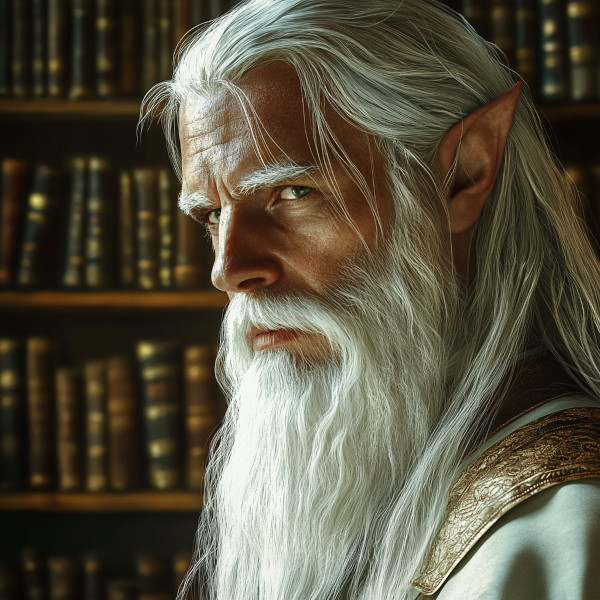

<div id="outline-container-caladhir-vaelora" class="outline-2">
<h2 id="caladhir-vaelora">Caladhir Vaelora</h2>
<div class="outline-text-2" id="text-caladhir-vaelora">
<div class="wrap-right-img">

<div id="orgcdfbc24" class="figure">
<p>
</p>
<p><span class="figure-number">Figure 1: </span>Caladhir Vaelora</p>
</div>
</div>

<ul class="org-ul">
<li><b>Age:</b> Died early second century of the third era</li>
<li><b>Race:</b> Hallashim</li>
<li><b>Occupation:</b> Emperor of the Hallashim</li>
<li><b>Enneagram Scale:</b> Type 5 (the investigator) with a wing of 8 (defender of justice)</li>
</ul>
</div>
</div>
<div id="outline-container-characteristics" class="outline-2">
<h2 id="characteristics">Characteristics</h2>
<div class="outline-text-2" id="text-characteristics">
<ol class="org-ol">
<li>Quiet, deliberate, and highly intellectual, speaking only when fully confident in his position.</li>
<li>Known for dismantling corrupt institutions, often by turning them against their leaders.</li>
<li>Revered as both a scholar and a reformer, with unmatched knowledge of Hallashim law and history.</li>
<li>Famously challenged opponents with the phrase &ldquo;Show me,&rdquo; demanding evidence and clarity.</li>
<li>Valued inclusion, often appointing Rahnami scholars and common folk to key positions.</li>
</ol>
</div>
</div>
<div id="outline-container-key-achievements" class="outline-2">
<h2 id="key-achievements">Key Achievements</h2>
<div class="outline-text-2" id="text-key-achievements">
<ol class="org-ol">
<li>Rediscovered King Tasfaye the Wise and revitalized the <b>Rahnami</b> and <b>Institutes of Civil Governance</b>.</li>
<li>Transformed the Hallashim from an imperialist power to a collaborative, inclusive society.</li>
<li>Prevented further wars by promoting diplomacy and restructuring the military as a defensive force.</li>
<li>Established enduring cultural practices, such as the Kaukloutan Desert pilgrimage.</li>
<li>Inspired reforms that shaped Hallashim governance and culture for centuries.</li>
</ol>
</div>
</div>
<div id="outline-container-stories" class="outline-2">
<h2 id="stories">Stories</h2>
<div class="outline-text-2" id="text-stories">
<p>
For detailed narratives about Caladhir’s life and legacy, see:
</p>
<ul class="org-ul">
<li><a href="file:///home/thawes/src/projects/naurrnen-website/org/stories/caladhir-vaelora-history.html#the-young-court-historian">The Young Court Historian:</a> How Caladhir’s scholarly pursuits led to his rediscovery of King Tasfaye.</li>
<li><a href="file:///home/thawes/src/projects/naurrnen-website/org/stories/caladhir-vaelora-history.html#the-five-year-search">The Five-Year Search:</a> The arduous journey to recover lost texts that redefined Hallashim governance.</li>
<li><a href="file:///home/thawes/src/projects/naurrnen-website/org/stories/caladhir-vaelora-history.html#the-reluctant-heir-to-the-thrown">The Reluctant heir to the Thrown:</a> The dramatic events leading to his acceptance of the throne.</li>
<li><a href="file:///home/thawes/src/projects/naurrnen-website/org/stories/caladhir-vaelora-history.html#the-mochveneba-shaman">The Mochveneba Shaman:</a> The story of his trusted advisor and their role in reshaping Hallashim culture.</li>
<li><a href="file:///home/thawes/src/projects/naurrnen-website/org/stories/caladhir-vaelora-history.html#a-lasting-legacy">A Lasting Legacy:</a> How Caladhir’s reforms endured and influenced the Third Era.</li>
</ul>
</div>
</div>
